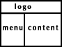
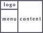

Главная | Оглавление | Словарь
В этой главе мы разберемся, как расположить документы в окне следующим образом:
 или 
В предыдущей главе я сказала, что мы можем делить окно только на ряды или колонки. Тогда как же расположить наши документы в окне так, как указано на рисунках? А разве я говорила, что ряд в свою очередь нельзя разбить на несколько колонок, а колонку на несколько рядов? Нет, не говорила :Ъ.
Начнем с первого рисунка:
Каким образом мы будем делить окно? - На ряды. В первом ряду у нас будет располагаться logo.html, а второй ряд мы поделим на две колонки, в которых будут располагаться документы menu.html и content.html.
<head>
<title>Хождение по фреймам</title>
<frameset rows="100,*">
<frame src="logo.html">
<???>
</frameset>
</head>
</html>
Принцип построения ясен, только вот как обозначить ряд, разбитый на две колонки? Тут нам поможет господин Frameset.
<head>
<title>Хождение по фреймам</title>
<frameset rows="100,*">
<frame src="logo.html">
<frameset cols="150,*">
<frame src="menu.html">
<frame src="content.html">
</frameset>
</frameset>
</head>
</html> (прим.)
Для тех, кто не уследил за движениями моих рук, поясняю. Первый ряд мы оформили как положено, при помощи тэга frame. Во втором ряду на сцену выгодит тэг <frameset></frameset>.
С помощью параметра cols тэга <frameset></frameset> мы делим второй ряд на две колонки (первая шириной 150 пикселов, вторая по ширине занимает все оставшееся пространство). А тэги <frame>, которые содержит <frameset></frameset> определяют какие документы будут показаны в колонках (menu.html и content.html).
Теперь разберем вариант, изображенный на втором рисунке:
Здесь мы будем делить окно на колонки. Вторая колонка будет содержать в себе документ content.html (содержание), а первую колонку мы разобьем на два ряда, и поместим в них документы logo.html и menu.html.
<head>
<title>Хождение по фреймам</title>
<frameset cols="100,*">
<frameset rows="100,*">
<frame src="logo.html">
<frame src="menu.html">
</frameset>
<frame src="content.html">
</frameset>
</head>
</html> (прим.)
Вот так. Ничего сложного здесь нет:)